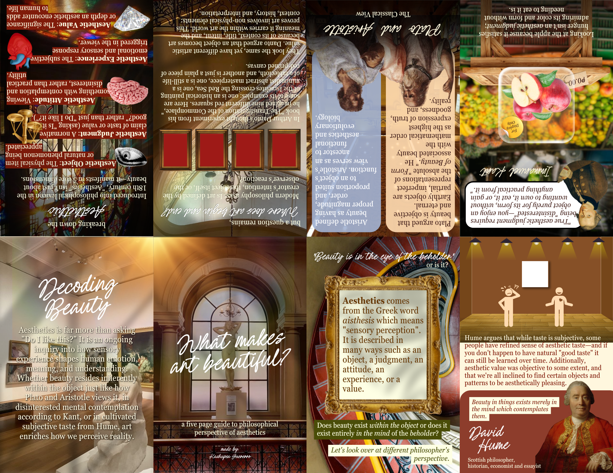

Get to know me!
I am Kashupea C. Guererro, a sophomore student of Bachelor of Arts in Multimedia Studies (BAMS). You may call me Kash as it is my preferred nickname. I am currently the Officer-In-Charge for the Membership Committee of UP Journalism Club and the current Editor-in-Chief of The Whirl, the publication arm of UP Broadcasters' Guild.
I am 19 years old and I currently reside at Quezon City. I am an aspiring journalist and a business owner. I am a striving individual who's determined to do her best for the better.
Things I Love
This list is in random order
- Cats (I have a 3 yr old orange cat!)
- The Color Pink
- Sinigang!
- Any food with Mango on it
- Musicals
- Marvel Cinematic Universe
- The Hunger Games Books and Franchise
- Crocheting and doing Digital Arts
- Malcolm Todd
- My OG Friend Group
Passion Projects
Here is one of my outputs that I believe represents my creativity.
